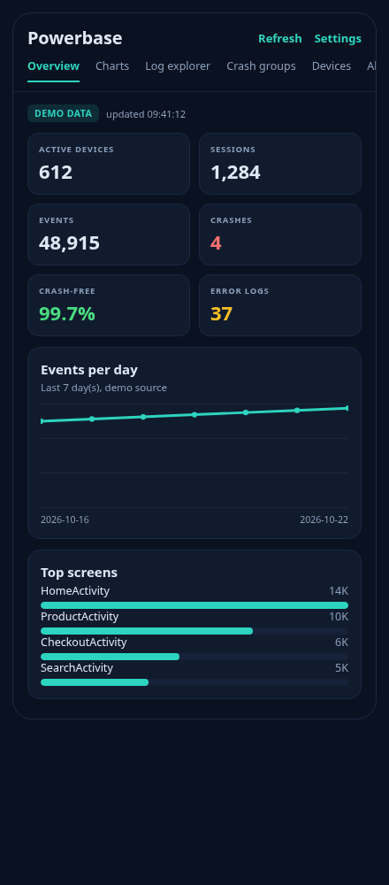
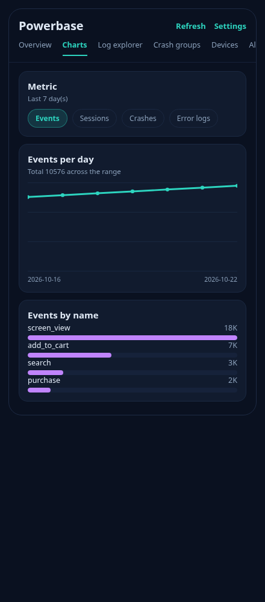
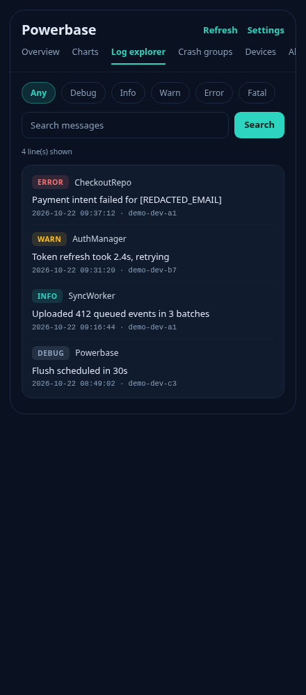
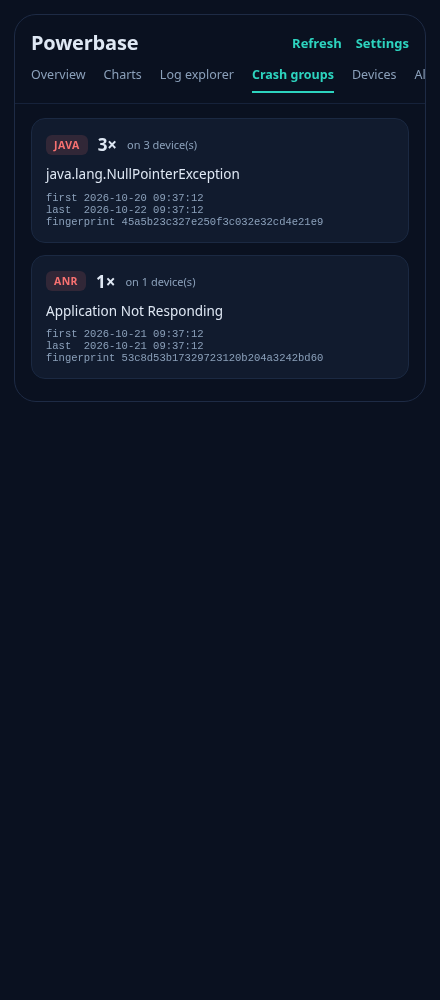
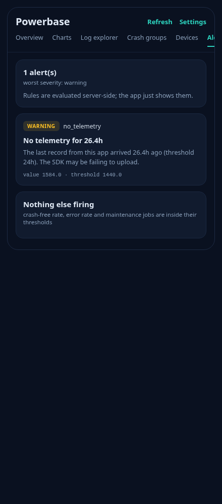
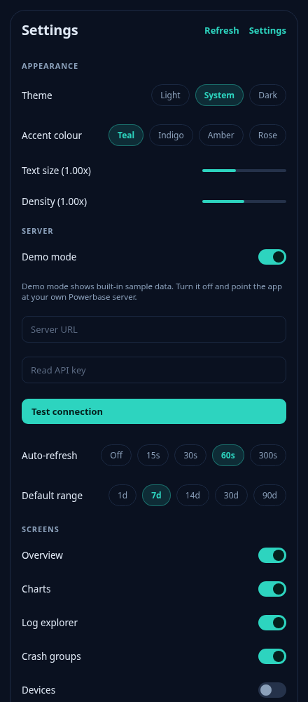

Powerbase is a self-hosted telemetry stack. The server ingests batched events, logs and crashes into a single SQLite file; this app puts that data in front of you — dashboards, a log explorer, crash groups, devices and alerts — without a single byte leaving your infrastructure.
Two pieces: a server you run, and this app. The server is one Python process over one SQLite file. The app is the client you actually look at.
Everything lands in a file you control. No third-party account, no per-event pricing, no data processing agreement to sign.
The SDK strips emails, phone numbers, Aadhaar, PAN, card numbers and tokens on the device. The server redacts again on arrival.
Demo mode ships on, so every screen is explorable the moment you install it.
Every screen, rendered from the app's own Compose layout. Demo mode is on, so this is exactly what you see on first launch.






Not a teaser — this is the reference for what each screen does.
| Screen | What it does |
|---|---|
| Overview | Six KPI cards — active devices, sessions, events, crashes, crash-free rate and error-log count — each colour-coded against its threshold. Below them: an events-per-day line chart for the selected range, a ranked list of top screens, a ranked list of top events, and the three most recent crash groups. A banner appears at the top whenever an alert is firing. |
| Charts | The same data at a larger size. Pick the metric (events, sessions, crashes, error logs) and the chart redraws; a total for the range is shown above it. Below, the same range broken down by event name and by screen. |
| Log explorer | Every log line the server holds. Filter by level — any, DEBUG, INFO, WARN, ERROR,
FATAL — or search the message text, which runs against the server's SQLite FTS5
index rather than a LIKE scan. Tap any row to expand its stacktrace and
context. Each row shows the level, tag, timestamp and originating device. |
| Crash groups | Crashes folded into groups by fingerprint, ranked by how many times each one happened. Each card shows the crash kind (java / native / anr), the occurrence count, how many distinct devices were affected, the first and last time it was seen, and the fingerprint itself. The fingerprint is computed on-device with the same algorithm the server uses, so line numbers and memory addresses do not split a group. |
| Devices | Every install that has reported: manufacturer, model, Android version, app version, session count and last-seen time, newest first. |
| Alerts | Whatever the server's rules are firing, with the severity, the rule name, the threshold it crossed and the measured value. Rules cover the crash-free rate, the error-log rate, an SDK that has gone silent, a failed maintenance job, and rollups that have fallen behind. |
| Settings | See the section below — every control is wired and persists immediately. |
A switch per screen. Turn one off and its tab disappears — the switches really gate the UI rather than sitting there decoratively.
Check for updates asks the app's GitHub Releases for the latest version and compares it to the one installed. If there is a newer one, Update downloads the signed APK and hands it to the system installer — straight over the installed app, with no browser and no uninstall.
Log collection is on by default. From here you can see how much has
been collected, share it through the system share sheet,
export it as .txt, .json, .md or
.zip, and clear it. Turning collection off stops new
writes but still lets you export and clear what already exists.
HttpURLConnection
for the network, org.json for parsing, and the charts drawn straight onto a
Compose Canvas.Ten minutes, from nothing to your own telemetry.
Download the signed APK from Releases and open it. You will need to allow installing from this source once. The app then keeps itself up to date from inside the app.
Demo mode is already on. Every screen is populated with sample data, so you can see what you are signing up for before running anything.
pip install -r requirements.txt python scripts/bootstrap.py --app-id com.example.shop --name "Example Shop" python run.py
Bootstrap prints two keys. Use the read key. An ingest key is write-only by design and cannot read your data back — that separation is what keeps a key embedded in a shipped app from being able to read anyone's telemetry.
Settings → Server → turn demo mode off → paste the server URL and the read key → tap
Test connection. You should see Connected — server reports 'ok'.
Add the Powerbase Android SDK to the app you want to instrument. It batches events, logs and crashes, buffers them durably on device, and uploads them with exponential backoff — including the crash that killed the app, captured on the way down.
There is no single winner — it depends on what you are optimising for. Here is the honest comparison, including where Powerbase loses.
| Powerbase | Crashlytics / Firebase | Sentry (self-hosted) | A plain SQL database | |
|---|---|---|---|---|
| Where your data lives | Your own file, on your own box | Google's infrastructure | Your box, but a fleet of services | Your own database |
| What you have to run | One Python process, one SQLite file | Nothing — it is a service | Postgres, Redis, Kafka, workers | Database + your own ingest + your own UI |
| Cost | Free, no per-event pricing | Free tier with sampling limits | Free tier is limited; self-hosting is a project | Database costs only |
| PII handling | Redacted on-device and server-side before storage | Your responsibility, after upload | Your responsibility, after upload | Whatever you write is what is stored |
| App-shaped data out of the box | Sessions, devices, crash groups, screens — modelled from day one | Crash-first, with events and funnels | Errors-first; sessions and devices need work | Tables you design yourself |
| History after retention | Daily rollups keep long-range charts alive after raw rows are pruned | Varies by plan | Retention tied to plan | Delete rows, lose the history |
| Native crash symbolication | Basic — fingerprints, not symbolicated native traces | Deep, including native and ANR analysis | Deep, with symbol servers | None |
| Performance tracing, replays, releases | Not the goal | Some | Extensive | None |
| Time to first dashboard | Minutes | Minutes | Hours to days, self-hosted | Weeks — you build the whole pipeline |
libfoo.so frame../gradlew assembleDebug # debug build ./gradlew assembleRelease # signed release
Release signing reads KEYSTORE_PATH, KEYSTORE_PASSWORD,
KEY_ALIAS and KEY_PASSWORD from the environment, so no key material
is ever committed. Pushing a v* tag makes CI build the signed APK and AAB and
publish them as a release.